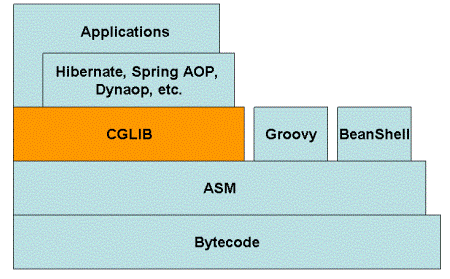

1. ¿Qué es CGLIB?
CGLIB es un paquete de generación de código potente y de alto rendimiento. Proporciona proxies para clases que no implementan interfaces, complementando muy bien el proxy dinámico de JDK. Normalmente se puede usar el proxy dinámico de Java para crear proxies, pero cuando la clase a ser proxy no implementa interfaces o para obtener un mejor rendimiento, CGLIB es una buena opción.
CGLIB, como proyecto de código abierto, su código está alojado en GitHub, en la dirección:https://github.com/cglib/cglib
2. Principios de CGLIB
Principios de CGLIB: Se genera dinámicamente una subclase de la clase a ser proxy; la subclase sobrescribe todos los métodos no finales de la clase a ser proxy. En la subclase, se utiliza la técnica de intercepción de métodos para interceptar todas las llamadas a métodos de la clase padre, tejiendo así la lógica transversal. Es más rápido que el proxy dinámico de JDK que usa reflexión de Java.
Capa subyacente de CGLIB: Utiliza el framework de procesamiento de bytecode ASM para transformar bytecode y generar nuevas clases. No se recomienda usar ASM directamente, porque requiere que estés muy familiarizado con la estructura interna de la JVM, incluido el formato de los archivos class y el conjunto de instrucciones.
Desventajas de CGLIB: No se puede realizar el proxy para métodos final.
3. Aplicaciones de CGLIB
Es ampliamente utilizado por muchos frameworks AOP, como Spring AOP y dynaop. Hibernate usa CGLIB para proxy de asociaciones de un solo extremo (single-ended) (muchos a uno y uno a uno).
4. ¿Por qué usar CGLIB?
El proxy CGLIB principalmente introduce un nivel de indirecta para los objetos mediante la manipulación del bytecode, con el fin de controlar el acceso a los objetos. Sabemos que en Java también existe un proxy dinámico que hace esto, entonces ¿por qué no usar directamente el proxy dinámico de Java y en su lugar usar CGLIB? La respuesta es que CGLIB es más potente que el proxy dinámico de JDK. Aunque el proxy dinámico de JDK es simple y fácil de usar, tiene un defecto fatal: solo puede hacer proxy de interfaces. Si la clase a ser proxy es una clase común y no tiene interfaces, entonces el proxy dinámico de Java no se puede usar.
5. Estructura de composición de CGLIB

La capa subyacente de CGLIB utiliza ASM (un framework de manipulación de bytecode pequeño pero poderoso) para operar el bytecode y generar nuevas clases. Además de la biblioteca CGLIB, los lenguajes de script (como Groovy y BeanShell) también usan ASM para generar bytecode. ASM utiliza un analizador similar a SAX para lograr alto rendimiento. No recomendamos usar ASM directamente, porque requiere un conocimiento suficiente del formato del bytecode de Java.
6. API de CGLIB
1. Paquete Jar:
- cglib-nodep-2.2.jar: Al usar el paquete nodep, no es necesario asociar el jar de ASM; el jar contiene internamente las clases de ASM.
- cglib-2.2.jar: Al usar este jar, es necesario asociar el jar de ASM; de lo contrario, se producirá un error en tiempo de ejecución.
2. Biblioteca de clases de CGLIB:
Debido a que el código básico es escaso, aprenderlo presenta cierta dificultad, principalmente por la falta de documentación y ejemplos; esta es también una deficiencia de CGLIB.
La versión de CGLIB utilizada en esta serie es 2.2.
- net.sf.cglib.core: Clases de procesamiento de bytecode de bajo nivel, la mayoría de ellas relacionadas con ASM.
- net.sf.cglib.transform: Conversión de clases y archivos de clase en tiempo de compilación o ejecución.
- net.sf.cglib.proxy: Clases que implementan la creación de proxies e interceptores de métodos.
- net.sf.cglib.reflect: Clases que implementan reflexión rápida y proxies al estilo de C#.
- net.sf.cglib.util: Clases de utilidad como ordenamiento de colecciones.
- net.sf.cglib.beans: Clases de utilidad relacionadas con JavaBean.
Este artículo presenta cómo implementar un proxy dinámico mediante MethodInterceptor y Enhancer.
1. Primero hablemos del proxy dinámico en JDK:
El proxy dinámico en JDK se implementa mediante la clase de reflexión Proxy y la interfaz de devolución de llamada InvocationHandler. Sin embargo, la clase que va a ser proxy dinámico en JDK debe implementar una interfaz, es decir, solo se pueden hacer proxy de los métodos definidos en la interfaz implementada por la clase. Esto tiene ciertas limitaciones en la programación real, y además la eficiencia del uso de reflexión no es muy alta.
2. Implementación con CGLib:
El uso de CGLib para implementar proxy dinámico no está limitado por la restricción de que la clase de proxy deba implementar una interfaz. Además, CGLib utiliza el framework de generación de bytecode ASM en su capa subyacente, y usa tecnología de bytecode para generar la clase proxy, lo cual es más eficiente que usar reflexión de Java. Lo único a tener en cuenta es que CGLib no puede hacer proxy de métodos declarados como final, porque el principio de CGLib es generar dinámicamente una subclase de la clase a ser proxy.
A continuación, se presentará un ejemplo para implementar proxy dinámico con CGLib.
1. Clase a ser proxy:
Primero, define una clase que no implemente ninguna interfaz.
2. Interceptor:
Define un interceptor. Cuando se llama al método objetivo, CGLib devuelve la llamada al método de la interfaz MethodInterceptor para interceptar, implementando así tu propia lógica de proxy, similar a la interfaz InvocationHandler en JDK.
Parámetros: Object es la instancia de la clase proxy generada dinámicamente por CGLib; Method es la referencia al método proxy llamado por la clase de entidad mencionada anteriormente; Object[] es la lista de valores de parámetros; MethodProxy es la referencia de proxy al método de la clase proxy generada.
Retorno: el valor devuelto por la invocación del método en la instancia proxy.
Donde,proxy.invokeSuper(obj,arg)Llama al método de la clase padre del método proxy en la instancia de la clase proxy (es decir, el método correspondiente en la clase de entidad TargetObject).
En este ejemplo, solo se imprime una frase antes y después de llamar al método de la clase proxy; por supuesto, en la programación real puede ser otra lógica compleja.
3. Generación de la clase proxy dinámica:
Aquí, la clase Enhancer es un mejorador de bytecode en CGLib que puede extender convenientemente las clases que deseas procesar; la verás a menudo en el futuro.
Primero, establece la clase a ser proxy TargetObject como clase padre, luego configura el interceptor TargetInterceptor, y finalmente ejecuta enhancer.create() para generar dinámicamente una clase proxy, y la convierte por coerción de Object al tipo padre TargetObject.
Finalmente, llama al método en la clase proxy.
4. Filtro de devolución de llamada CallbackFilter
1. Función
En CGLib, al devolver la llamada, se puede configurar la ejecución de diferente lógica de callback para diferentes métodos, o incluso no ejecutar ningún callback.
En el proxy dinámico de JDK no existe una función similar; la llamada al método de la interfaz InvocationHandler es efectiva para todos los métodos dentro de la clase proxy.
Define una clase que implemente la interfaz de filtro CallbackFilter:
El valor de retorno es el índice de posición de cada método de la clase a ser proxy en el arreglo de callbacks Callback[] (ver más abajo).
5. Objetos de carga diferida
1. Función:
Hablando de la carga diferida (lazy loading), debería ser algo que se encuentra con frecuencia, especialmente al usar Hibernate. En este artículo, analizaremos la forma de implementación de la carga diferida mediante un ejemplo. La interfaz LazyLoader hereda de Callback, por lo que también se considera un tipo de Callback en CGLib.
Otra interfaz de carga diferida es Dispatcher.
La interfaz Dispatcher también hereda de Callback y también es un tipo de devolución de llamada.
Pero la diferencia entre Dispatcher y LazyLoader es: LazyLoader solo activa el método de devolución de llamada de la clase proxy la primera vez que se accede a la propiedad de carga diferida, mientras que Dispatcher activa el método de devolución de llamada de la clase proxy cada vez que se accede a la propiedad de carga diferida.
2. Ejemplo:
Primero defina una clase de entidad LoaderBean. Esta Bean contiene una propiedad PropertyBean que necesita carga diferida.
6. Generador de interfaces InterfaceMaker
1. Función:
InterfaceMaker generará dinámicamente una interfaz, la cual contiene todos los métodos definidos por la clase especificada.
2. Ejemplo:
Dirección original:
https://blog.csdn.net/zghwaicsdn/article/details/50957474
https://blog.csdn.net/danchu/article/details/70238002
Haz clic para compartir notas
<p style="font-size:14px;">¡La nota debe ser una extensión del contenido de este artículo!</p><br> <p style="font-size:12px;"><a href="../tougao.html" target="_blank">Envío de artículos, haga clic aquí</a></p> <p style="font-size:14px;"><a href="./runoob-user-test-intro.html" target="_blank">Cómo obtener el código de invitación de registro</a></p> <h3 class="text-muted"><i class="fa fa-info-circle" aria-hidden="true"></i> ¡Antes de compartir notas, debe <a href=".." class="runoob-pop">iniciar sesión</a>!</h3> <p><a href="./runoob-user-test-intro.html" target="_blank">Cómo obtener el código de invitación de registro</a></p>